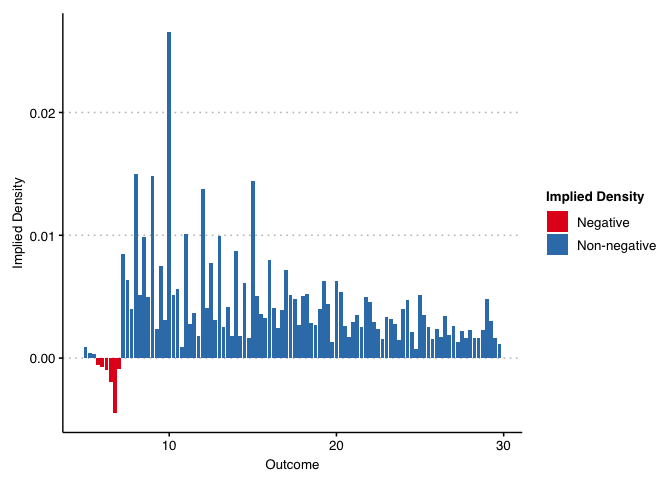
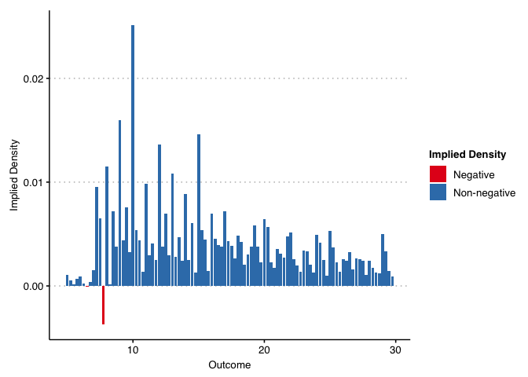

The didFF R package assesses when the validity of difference-in-differences and related estimators depends on functional form, based on the theoretical results in Roth and Sant’Anna (2023). This package provides a test for whether parallel trends is insensitive to functional form by estimating the implied density of potential outcomes under the null and checking if it is significantly below zero at some point.
Installation
You can install the development version of didFF from GitHub with:
#Install the remotes package if not already installed
# install.packages("remotes")
#Install the didFF package using remotes
remotes::install_github("pedrohcgs/didFF")Example
We now provide and example of how to use the package using the empirical illustration from Roth and Sant’Anna (2023, p. 743–744).
Loading the package and the data
We first load the package and the data.
# Load didFF and other auxiliary libraries for data manipulation
library(didFF)
library(tidyverse)
library(dplyr)
mw_df<-didFF::Cengiz_df #load Cengiz et al. (2019) data frameThe data is derived from the dataset compiled by Cengiz et al. (2019). For each state and year, it provides the number of people employed at each wage level (coarsened to 25c bins), with a value of 0 for people not in the labor force. It also contains an indicator variables (treated) for whether a state raised its minimum wage in the given year.
head(mw_df, 5)
#> wagebins statenum year quarterdate overallcountpc treated_quarter
#> 1 100 1 2007 188 0.000000000 0
#> 2 100 1 2007 189 0.000000000 0
#> 3 100 1 2007 190 0.000000000 0
#> 4 100 1 2007 191 0.000000000 0
#> 5 100 1 2008 192 0.001836395 0
#> treated_year MW population
#> 1 0 5.15 3578266
#> 2 0 5.15 3564137
#> 3 0 5.85 3576752
#> 4 0 5.85 3583092
#> 5 0 5.85 3577623Testing Functional Form for DiD between 2007 and 2015
We will now test whether a DiD analysis for the effect of the minimum wage on wages (weighted by population) is insensitive to functional form—i.e. that parallel trends is valid regardless of whether wages are measured in levels, logs, percentiles, etc. We first consider an analysis where the pre-treatment period is 2007, the post-treatment period is 2015, and the treatment is whether a state raised its minimum wage at any point between the pre-treatment and post-treatment periods. We call didFF as follows:
# Create treatment groups according to the description above
start_t = 2007 # pre-treatment year
end_t = 2015 # post-treatment year
# Create dataset
mw_df_2007_2015 <-
mw_df %>%
# filter out data outside the time window of interest
dplyr::filter((start_t <= year) & (year <= end_t)) %>%
dplyr::group_by(statenum) %>%
# Create group variable that take value end_t if state was ever treated in this period, and 0 otherwise
dplyr::mutate(group = max(treated_quarter > 0, na.rm=TRUE)*end_t) %>%
#filter data back to pre and post periods only
dplyr::filter((year == start_t) | (year == end_t)) %>%
dplyr::group_by(statenum, wagebins) %>%
dplyr::mutate(wagebins=wagebins/100, wgt=overallcountpc*population) %>%
dplyr::filter(wgt >= 0)
# Run the test (Replicates Figure 2a in Roth and Sant'Anna, 2023)
test_2007_2015 <- didFF(
data = mw_df_2007_2015,
idname = "statenum",
yname = "wagebins",
tname = "year",
gname = "group",
weightsname = "wgt",
est_method = "reg",
binpoints = sort(unique(mw_df_2007_2015$wagebins)),
allow_unbalanced_panel = TRUE,
lb_graph = 5,
ub_graph = 29.75,
seed = 1
)
#> Warning in didFF(data = mw_df_2007_2015, idname = "statenum", yname =
#> "wagebins", : You have observations with g=0 and all time periods t>0; assuming
#> the g=0 cohort is never-treated.
test_2007_2015$plot
test_2007_2015$pval
#> [1] 0The plot shows the implied counterfactual density for the treated group if parallel trends holds for all functional forms of the outcome, which Roth and Sant’Anna show is equivalent to “parallel trends of distributions”. (To preserve reasonable scaling, we use the options lb_graph and ub_graph so that the plot shows only wages above 5 and below 30). The figure shows that the implied density is negative for wages between approximately $5-7/hour.
The plot also shows a formal p-value for the null hypothesis that parallel trends holds for all functional forms (this is calculated using a “least-favorable” critical value for moment inequalities, as in, e.g., Section 4.1.1 of Canay and Shaikh (2017)). The test shows that we are able to reject the null hypothesis that all of the implied densities are positive (p<0.001). We thus reject the null that parallel trends hold for all functional forms of the outcome.
Testing Functional Form for DiD between 2010 and 2015
By contrast, results using the period 2010-2015 shows that the estimated counterfactual distribution has positive density nearly everywhere, and we cannot formally reject the hypothesis that it is positive everywhere (p=0.293). This does not necessarily imply that parallel trends holds for all transformations of the outcome, but insensitivity to functional form is not rejected by the data in this example.
start_t = 2010
mw_df_2010_2015 <-
mw_df %>%
dplyr::filter((start_t <= year) & (year <= end_t)) %>%
dplyr::group_by(statenum) %>%
dplyr::mutate(group = max(treated_quarter > 0,na.rm=TRUE)*end_t) %>%
dplyr::filter((year == start_t) | (year == end_t)) %>%
dplyr::group_by(statenum, wagebins) %>%
dplyr::mutate(wagebins=wagebins/100, wgt=overallcountpc*population) %>%
dplyr::filter(wgt >= 0)
# Run the test (Replicates Figure 2b in Roth and Sant'Anna, 2023)
test_2010_2015 <- didFF(
data = mw_df_2010_2015,
idname = "statenum",
yname = "wagebins",
tname = "year",
gname = "group",
weightsname = "wgt",
est_method = "reg",
binpoints = sort(unique(mw_df_2010_2015$wagebins)),
allow_unbalanced_panel = TRUE,
lb_graph = 5,
ub_graph = 29.75,
seed = 1
)
#> Warning in didFF(data = mw_df_2010_2015, idname = "statenum", yname =
#> "wagebins", : You have observations with g=0 and all time periods t>0; assuming
#> the g=0 cohort is never-treated.
test_2010_2015$plot
test_2010_2015$pval
#> [1] 0.3317Distributional Treatement Effects
Under parallel trends it is possible to compute the counterfactual distribution of the treated group, which is the distribution of Y(1) minus the implied distribution of Y(0) for treated groups.
dist_2007_2015 <- distDD(
data = mw_df_2007_2015,
idname = "statenum",
yname = "wagebins",
tname = "year",
gname = "group",
weightsname = "wgt",
est_method = "reg",
binpoints = sort(unique(mw_df_2007_2015$wagebins)),
allow_unbalanced_panel = TRUE,
seed = 1
)
#> Warning in didFF(..., distDD = TRUE): You have observations with g=0 and all
#> time periods t>0; assuming the g=0 cohort is never-treated.
head(dist_2007_2015$table)
#> level test.estimates test.se
#> 1 [0,1] -4.930592e-03 7.160771e-03
#> 2 (1,1.25] -5.071141e-05 9.575429e-05
#> 3 (1.25,1.5] 1.069623e-05 6.171445e-05
#> 4 (1.5,1.75] 4.698969e-05 6.634287e-05
#> 5 (1.75,2] -2.211360e-03 3.352551e-04
#> 6 (2,2.25] 9.703339e-04 4.718257e-04